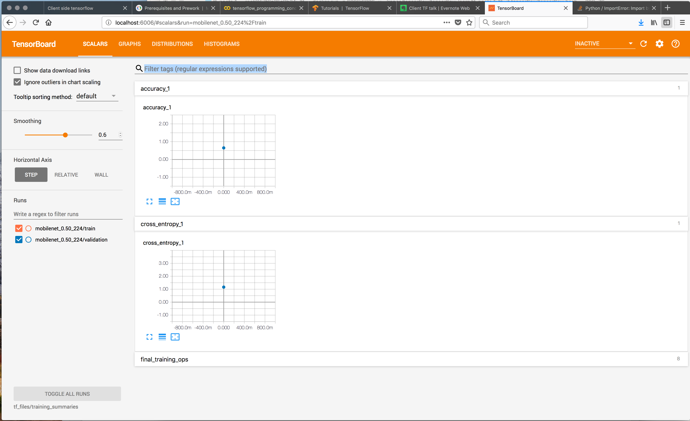
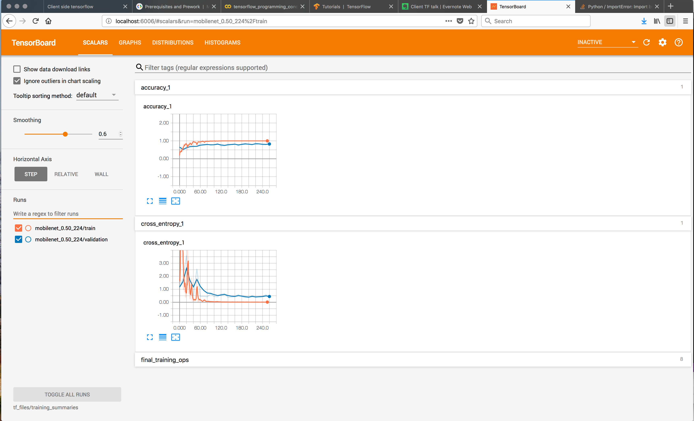
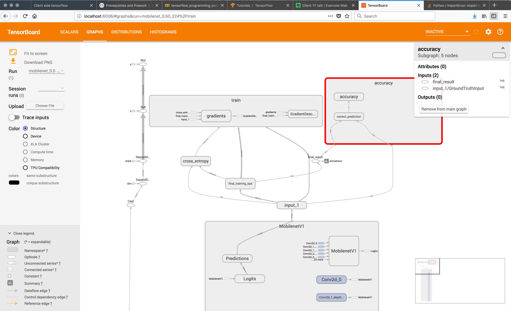
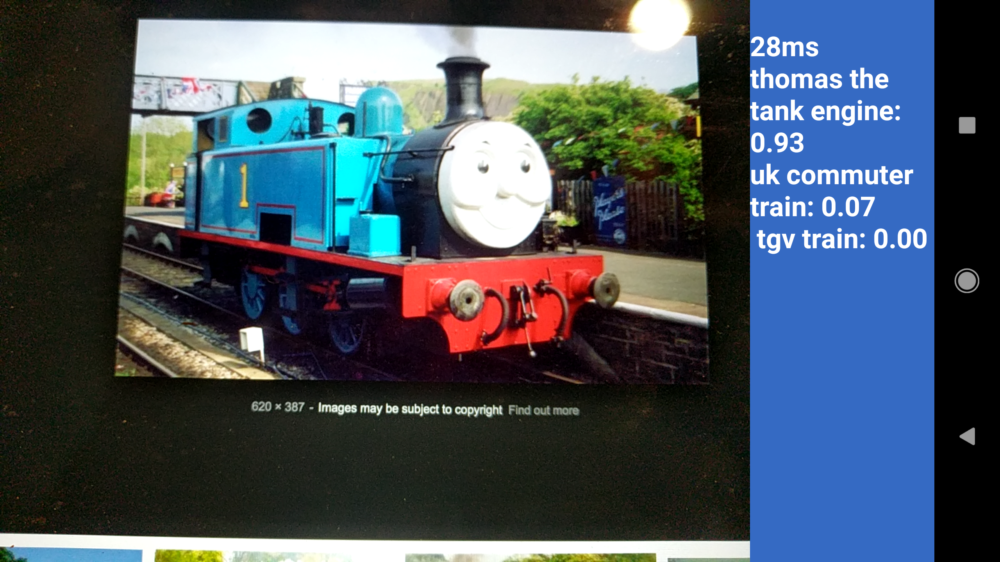

Client side tensorflow

What we will cover ...
- Jargon buster
- 20,000 mile high overview of Tensorflow ecosystem
- Training a model using TFPoets codelab scripts
- Deployment on Android & iOS using TFLite
- Tensorflow.js
- Pros & cons of Client side
- Possible usages & TOIL reduction
- Learning
Neural network
- Transforms a set of inputs (features) into outputs (classifications)
- Use a dataset to train - then measure classification accuracy (RMS)
- Produces a
Model which can used to classify input features
Transfer learning
- Using pre-trained neural net which can be refined by just re-training the final layers
- Requires less computation and less data to train
MobileNet
- A set of image recognition models produced by google
- Optimised for efficiency on mobile
- Can be retrained for a specific purpose using transfer learning
Tensorflow API
- A dataflow API for numerical computation that builds a graph
- Graph gets built then executed on hardware - CPU, GPU, TPU
Tensorflow Languages
- Python : most advanced
- Java (Kotlin)
- JavaScript (New) - Tensorflow.js
- Swift (Early stage)
- Go
- C / C++
Tensorflow API - Basics
- The graph is is executed in a
tf.Session()
- Each tensorflow command has input and output data
- The session holds the state
- The graph execution can be parallelized where possible
Tensorflow sub-projects
-
Tensorflow.js : Javascript bindng for tensorflow
-
Tensorflow Lite : Optimised & efficient runtime for embedded / mobile devices
-
Tensorflow Mobile : TFLite's predecessor - less optimised but has more TF operations
-
Hub : Collaboration library to share tensorflow modules & components
-
TFX : Production utilites and optimisation
-
Magenta : Art and music experimentation projects
Training a model using TFPoets
Retraining - overview
- Use MobileNet model as a base to perform transfer learning on a set of images
- Use Tensorboard webapp to monitor progress and debug graph
- Produces a model which can be used for classification
Retraining - Dataset
- Collect lots of images (best == 1000s) into a directory
- Example collected around 100 images from google of Trains
- Labels : TGV, uk commuter, steam, freight, thomas the tank engine
Retraining - Run
- Execute retrain script in tensorflow for poets
- More steps give a better model (takes longer) 500 < steps < 5000+
- Monitor progress with tensorboard
Tensorboard - initial

Tensorboard - in progress

Tensorboard - drill down

Tensorflow Lite (TFLite)
- Optimised runtime for tensorflow models (Mobile/embedded)
- Model is converted to .lite format using a tool called
toco
- Lite format uses FlatBuffers - memory mapped for efficiency
- Only supports a subset of Tensorflow operations (No transfer learning) 😔
TFLite - Integration Android
Interpreter tflite = new Interpreter(loadModelFile());
List<String> labelList = loadLabelList(activity);
ByteBuffer imgData =
ByteBuffer.allocateDirect(
4 * IMG_SIZE_X * IMG_SIZE_Y * DIM_PIXEL_SIZE);
imgData.order(ByteOrder.nativeOrder());
labelProbArray = new float[1][labelList.size()];
// on image received
convertBitmapToByteBuffer(bitmap);
tflite.run(imgData, labelProbArray);
TFLite - Integration iOS
std::vector<std::string> labels;
std::unique_ptr<tflite::FlatBufferModel> model;
tflite::ops::builtin::BuiltinOpResolver resolver;
std::unique_ptr<tflite::Interpreter> interpreter;
// loading model and configure tflite instance
NSString* graph_path = FilePathForResourceName(model_file_name, model_file_type);
model = tflite::FlatBufferModel::BuildFromFile([graph_path UTF8String]);
LoadLabels(labels_file_name, labels_file_type, &labels);
tflite::ops::builtin::BuiltinOpResolver resolver;
tflite::InterpreterBuilder(*model, resolver)(&interpreter);
// on image received
[self inputImageToModel:image];
interpreter->Invoke()
float* probs = interpreter->typed_output_tensor<float>(0);
Results - Trainspotter app
Trainspotter - Thomas

Tensorflow.js
- Javascript binding for the Tensorflow C library
- Works in browser & NodeJS
- Can do transfer learning / retraining
- Can use WebGL (Linux only ATM) (Faster)
- Can use browser sensor data directly to retrain models
- Not as fast as native implementations - gets slower with larger models
- Exporting models in development progress 😔
Tensorflow.js - installation & running
-
yarn add @tensorflow/tfjs
-
node getting-started.js <-- whatever file
Client side ML - Advantages 😎
- "Free" compute power (for running NN and feature processing)
- Free real-time high definition data
- Low latency
- Access to onboard devices and hardware (camera, sensors, mic)
- Customer data security - data doesn't leave device
- for TF.js can use device input for retraining
Client side ML - Disdvantages 😬
- Power usage can be high
- Need to lots of model & feature optimisation 😓
Usages/ideas .. toil reduction
- Image recognition - read tickets & timetable boards (crowdsource real-time data)
- Help assistant - Natural Language Processing
- UI customisation for the user
- Selleing extra products based on customer's present situation
- ML becomes more useful as software complexity grows